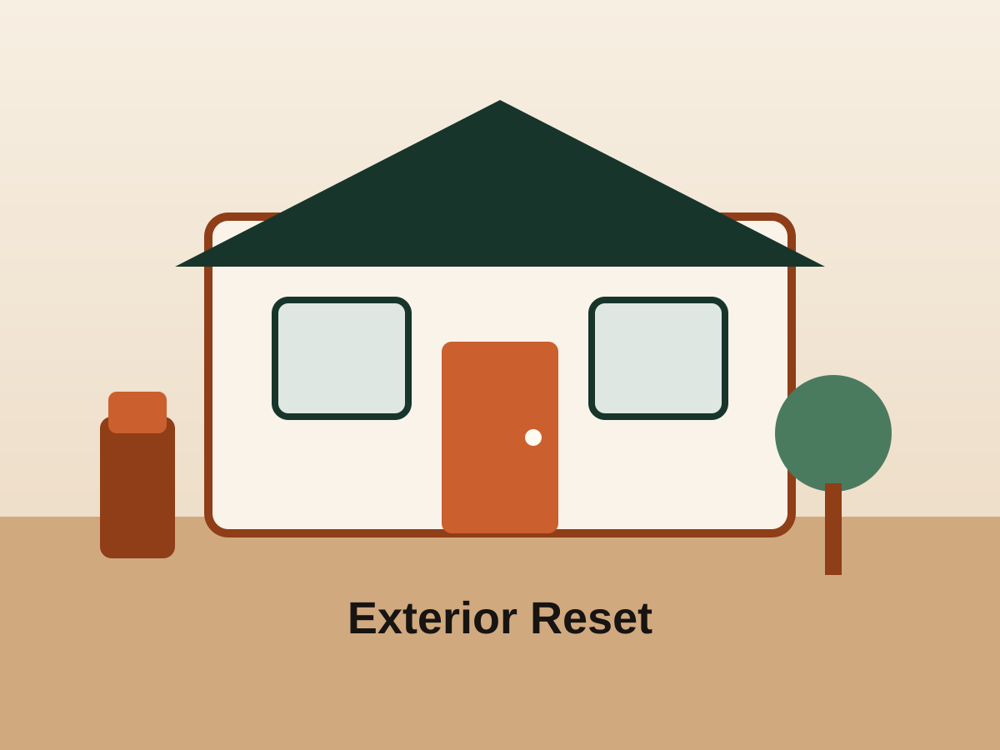
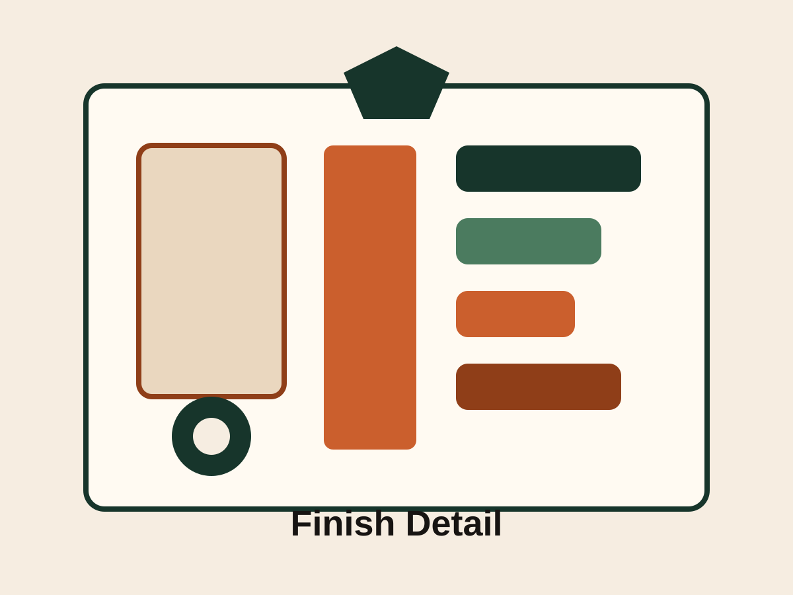
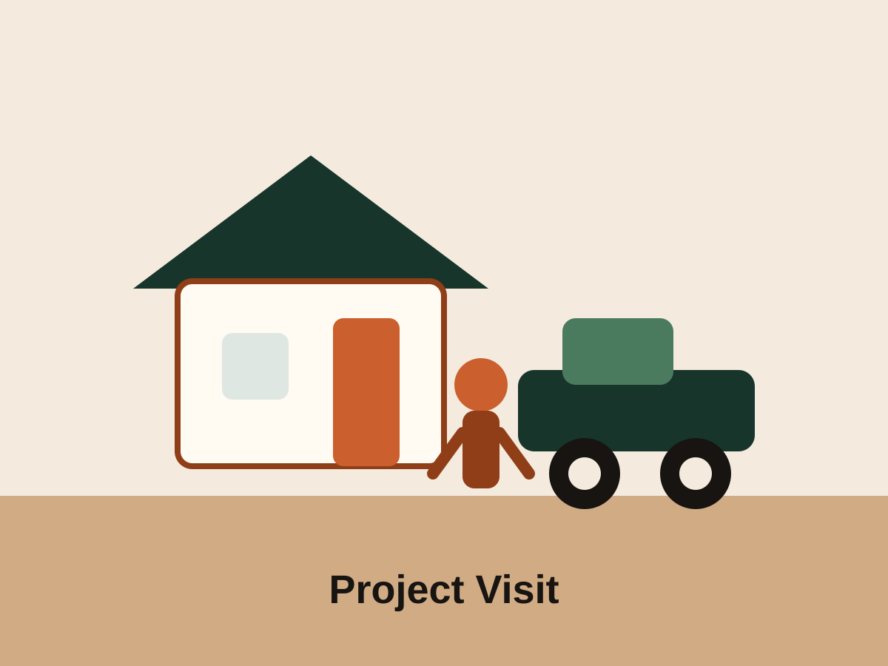

Project 01
Residential exterior improvement
Exterior handyman work focused on curb appeal, visible repairs, and getting a property looking tighter and more cared for.
Portfolio + reviews
This page gives Big Iron a clean proof-of-work section now and can later be upgraded with real job photography and before-and-after sets.

Project 01
Exterior handyman work focused on curb appeal, visible repairs, and getting a property looking tighter and more cared for.

Project 02
Trim, hardware, and finishing work that shows the detail side of the business without overcomplicating the presentation.

Project 03
The section is ready for real Big Iron photos later, but no longer contains broken image links or mock-photo references.
“Derek and Danny were awesome. Super communicative, easy to schedule with, and the work came out clean and solid. Would absolutely hire them again.”
Sophia T. Portola Valley“They helped us repair exterior wood trim and a gate that was starting to sag. Everything looks tighter now and it finally closes the way it should.”
Daniel K. Menlo Park“We had a weird list of small repairs, and they handled all of it without making it feel like a hassle. Good communication, good workmanship, great experience overall.”
Maya C. Saratoga“It is hard to find handyman work that actually feels professional from start to finish, but these guys delivered. On time, experienced, and very easy to trust in our home.”
Owen P. Los Altos HillsNext step